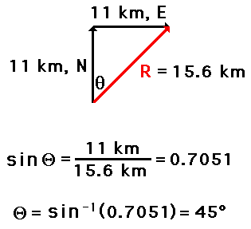
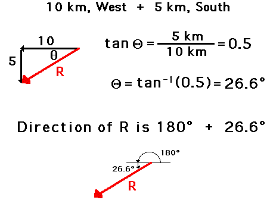
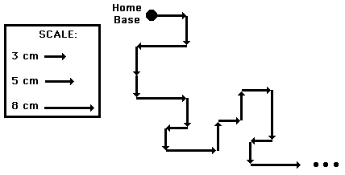
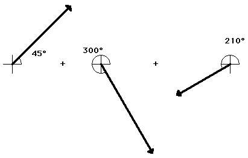

Panel
Vectors - Motion and Forces in Two Dimensions >> Lesson 1 - Vectors: Fundamentals and Operations
1.2 Vector Addition
A variety of mathematical operations can be performed with and upon vectors. One such operation is the addition of vectors. Two vectors can be added together to determine the result (or resultant). This process of adding two or more vectors has already been discussed in an earlier unit. Recall in our discussion of Newton's laws of motion, that the net force experienced by an object was determined by computing the vector sum of all the individual forces acting upon that object. That is the net force was the result (or resultant) of adding up all the force vectors. During that unit, the rules for summing vectors (such as force vectors) were kept relatively simple. Observe the following summations of two force vectors:

These rules for summing vectors were applied to free-body diagrams in order to determine the net force (i.e., the vector sum of all the individual forces). Sample applications are shown in the diagram below.

In This unit, the task of summing vectors will be extended to more complicated cases in which the vectors are directed in directions other than purely vertical and horizontal directions. For example, a vector directed up and to the right will be added to a vector directed up and to the left. The vector sum will be determined for the more complicated cases shown in the diagrams below.

There are a variety of methods for determining the magnitude and direction of the result of adding two or more vectors. The two methods that will be discussed in this lesson and used throughout the entire unit are:
- the Pythagorean theorem and trigonometric methods
- the head-to-tail method using a scaled vector diagram
The Pythagorean Theorem
The Pythagorean theorem is a useful method for determining the result of adding two (and only two) vectors that make a right angle to each other. The method is not applicable for adding more than two vectors or for adding vectors that are not at 90-degrees to each other. The Pythagorean theorem is a mathematical equation that relates the length of the sides of a right triangle to the length of the hypotenuse of a right triangle.

To see how the method works, consider the following problem:
Eric leaves the base camp and hikes 11 km, north and then hikes 11 km east. Determine Eric's resulting displacement.
This problem asks to determine the result of adding two displacement vectors that are at right angles to each other. The result (or resultant) of walking 11 km north and 11 km east is a vector directed northeast as shown in the diagram to the right. Since the northward displacement and the eastward displacement are at right angles to each other, the Pythagorean theorem can be used to determine the resultant (i.e., the hypotenuse of the right triangle).

The result of adding 11 km, north plus 11 km, east is a vector with a magnitude of 15.6 km. Later, the method of determining the direction of the vector will be discussed.
Let's test your understanding with the following two practice problems. In each case, use the Pythagorean theorem to determine the magnitude of the vector sum. When finished, click the button to view the answer.

Using Trigonometry to Determine a Vector's Direction
The direction of a resultant vector can often be determined by use of trigonometric functions. Most students recall the meaning of the useful mnemonic SOH CAH TOA from their course in trigonometry. SOH CAH TOA is a mnemonic that helps one remember the meaning of the three common trigonometric functions - sine, cosine, and tangent functions. These three functions relate an acute angle in a right triangle to the ratio of the lengths of two of the sides of the right triangle. The sine function relates the measure of an acute angle to the ratio of the length of the side opposite the angle to the length of the hypotenuse. The cosine function relates the measure of an acute angle to the ratio of the length of the side adjacent the angle to the length of the hypotenuse. The tangent function relates the measure of an angle to the ratio of the length of the side opposite the angle to the length of the side adjacent to the angle. The three equations below summarize these three functions in equation form.

These three trigonometric functions can be applied to the hiker problem in order to determine the direction of the hiker's overall displacement. The process begins by the selection of one of the two angles (other than the right angle) of the triangle. Once the angle is selected, any of the three functions can be used to find the measure of the angle. Write the function and proceed with the proper algebraic steps to solve for the measure of the angle. The work is shown below.
Once the measure of the angle is determined, the direction of the vector can be found. In this case the vector makes an angle of 45 degrees with due East. Thus, the direction of this vector is written as 45 degrees.
The measure of an angle as determined through use of SOH CAH TOA is not always the direction of the vector. The following vector addition diagram is an example of such a situation. Observe that the angle within the triangle is determined to be 26.6 degrees using SOH CAH TOA. This angle is the southward angle of rotation that the vector R makes with respect to West. Yet the direction of the vector as expressed with the CCW (counterclockwise from East) convention is 206.6 degrees.
Test your understanding of the use of SOH CAH TOA to determine the vector direction by trying the following two practice problems. In each case, use SOH CAH TOA to determine the direction of the resultant. When finished, click the button to view the answer.

In the above problems, the magnitude and direction of the sum of two vectors is determined using the Pythagorean theorem and trigonometric methods (SOH CAH TOA). The procedure is restricted to the addition of two vectors that make right angles to each other. When the two vectors that are to be added do not make right angles to one another, or when there are more than two vectors to add together, we will employ a method known as the head-to-tail vector addition method. This method is described below.
Use of Scaled Vector Diagrams to Determine a Resultant
The magnitude and direction of the sum of two or more vectors can also be determined by use of an accurately drawn scaled vector diagram. Using a scaled diagram, the head-to-tail method is employed to determine the vector sum or resultant. A common Physics lab involves a vector walk. Either using centimeter-sized displacements upon a map or meter-sized displacements in a large open area, a student makes several consecutive displacements beginning from a designated starting position. Suppose that you were given a map of your local area and a set of 18 directions to follow. Starting at home base, these 18 displacement vectors could be added together in consecutive fashion to determine the result of adding the set of 18 directions. Perhaps the first vector is measured 5 cm, East. Where this measurement ended, the next measurement would begin. The process would be repeated for all 18 directions. Each time one measurement ended, the next measurement would begin. In essence, you would be using the head-to-tail method of vector addition.
The head-to-tail method involves drawing a vector to scale on a sheet of paper beginning at a designated starting position. Where the head of this first vector ends, the tail of the second vector begins (thus, head-to-tail method). The process is repeated for all vectors that are being added. Once all the vectors have been added head-to-tail, the resultant is then drawn from the tail of the first vector to the head of the last vector; i.e., from start to finish. Once the resultant is drawn, its length can be measured and converted to real units using the given scale. The direction of the resultant can be determined by using a protractor and measuring its counterclockwise angle of rotation from due East.
A step-by-step method for applying the head-to-tail method to determine the sum of two or more vectors is given below.
- Choose a scale and indicate it on a sheet of paper. The best choice of scale is one that will result in a diagram that is as large as possible, yet fits on the sheet of paper.
- Pick a starting location and draw the first vector to scale in the indicated direction. Label the magnitude and direction of the scale on the diagram (e.g., SCALE: 1 cm = 20 m).
- Starting from where the head of the first vector ends, draw the second vector to scale in the indicated direction. Label the magnitude and direction of this vector on the diagram.
- Repeat steps 2 and 3 for all vectors that are to be added
- Draw the resultant from the tail of the first vector to the head of the last vector. Label this vector as Resultant or simply R.
- Using a ruler, measure the length of the resultant and determine its magnitude by converting to real units using the scale (4.4 cm x 20 m/1 cm = 88 m).
- Measure the direction of the resultant using the counterclockwise convention discussed earlier in this lesson.
An example of the use of the head-to-tail method is illustrated below. The problem involves the addition of three vectors:
20 m, 45 deg. + 25 m, 300 deg. + 15 m, 210 deg.SCALE: 1 cm = 5 m  The head-to-tail method is employed as described above and the resultant is determined (drawn in red). Its magnitude and direction is labeled on the diagram.

SCALE: 1 cm = 5 m
Interestingly enough, the order in which three vectors are added has no affect upon either the magnitude or the direction of the resultant. The resultant will still have the same magnitude and direction. For example, consider the addition of the same three vectors in a different order.
15 m, 210 deg. + 25 m, 300 deg. + 20 m, 45 deg.SCALE: 1 cm = 5 m

When added together in this different order, these same three vectors still produce a resultant with the same magnitude and direction as before (20. m, 312 degrees). The order in which vectors are added using the head-to-tail method is insignificant.
SCALE: 1 cm = 5 m